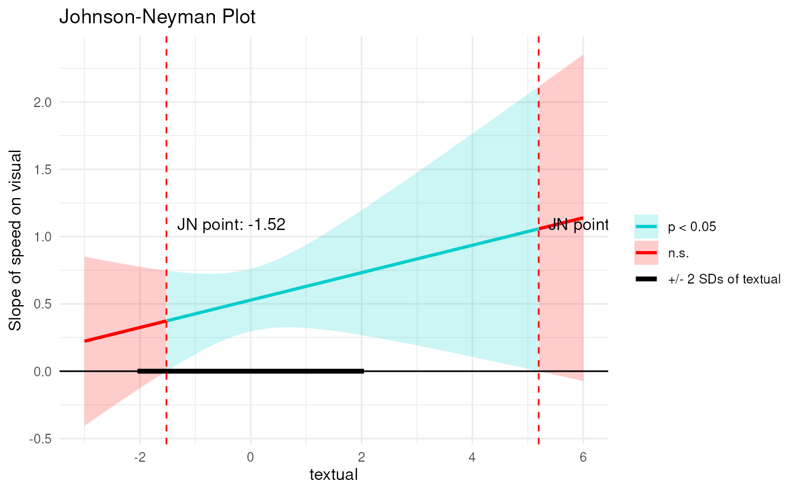

Plot Interaction Effect Using the Johnson-Neyman Technique
plot_jn.RdThis function plots the simple slopes of an interaction effect across different values of a moderator variable using the Johnson-Neyman technique. It identifies regions where the effect of the predictor on the outcome is statistically significant.
Usage
plot_jn(
x,
z,
y,
model,
min_z = -3,
max_z = 3,
sig.level = 0.05,
alpha = 0.2,
detail = 1000,
sd.line = 2,
standardized = FALSE,
xz = NULL,
greyscale = FALSE,
plot.jn.points = TRUE,
...
)Arguments
- x
The name of the predictor variable (as a character string).
- z
The name of the moderator variable (as a character string).
- y
The name of the outcome variable (as a character string).
- model
A fitted model object of class
modsem_da,modsem_mplus,modsem_pi, orlavaan.- min_z
The minimum value of the moderator variable
zto be used in the plot (default is -3). It is relative to the mean of z.- max_z
The maximum value of the moderator variable
zto be used in the plot (default is 3). It is relative to the mean of z.- sig.level
The alpha-criterion for the confidence intervals (default is 0.05).
- alpha
alpha setting used in
ggplot(i.e., the opposite of opacity)- detail
The number of generated data points to use for the plot (default is 1000). You can increase this value for smoother plots.
- sd.line
A thick black line showing
+/- sd.line * sd(z). NOTE: This line will be truncated bymin_zandmax_zif the sd.line falls outside of[min_z, max_z].- standardized
Should coefficients be standardized beforehand?
- xz
The name of the interaction term. If not specified, it will be created using
xandz.- greyscale
Logical. If
TRUEthe plot is plotted in greyscale.- plot.jn.points
Logical. If
TRUE, omit the numeric annotations for the JN-points from the plot.- ...
Additional arguments (currently not used).
Details
The function calculates the simple slopes of the predictor variable x on the outcome variable y at different levels of the moderator variable z. It uses the Johnson-Neyman technique to identify the regions of z where the effect of x on y is statistically significant.
It extracts the necessary coefficients and variance-covariance information from the fitted model object. The function then computes the critical t-value and solves the quadratic equation derived from the t-statistic equation to find the Johnson-Neyman points.
The plot displays:
The estimated simple slopes across the range of
z.Confidence intervals around the slopes.
Regions where the effect is significant (shaded areas).
Vertical dashed lines indicating the Johnson-Neyman points.
Text annotations providing the exact values of the Johnson-Neyman points.
Examples
# \dontrun{
library(modsem)
m1 <- '
visual =~ x1 + x2 + x3
textual =~ x4 + x5 + x6
speed =~ x7 + x8 + x9
visual ~ speed + textual + speed:textual
'
est <- modsem(m1, data = lavaan::HolzingerSwineford1939, method = "ca")
plot_jn(x = "speed", z = "textual", y = "visual", model = est, max_z = 6)
#> Johnson-Neyman Interval:
#> When textual is outside the interval [-1.52, 5.20], the slope of speed is p < .05.

# }